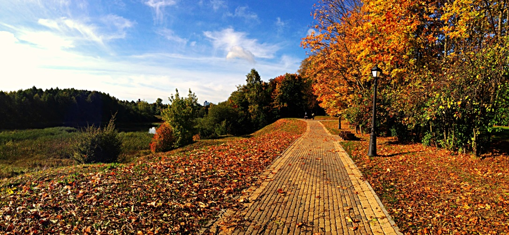
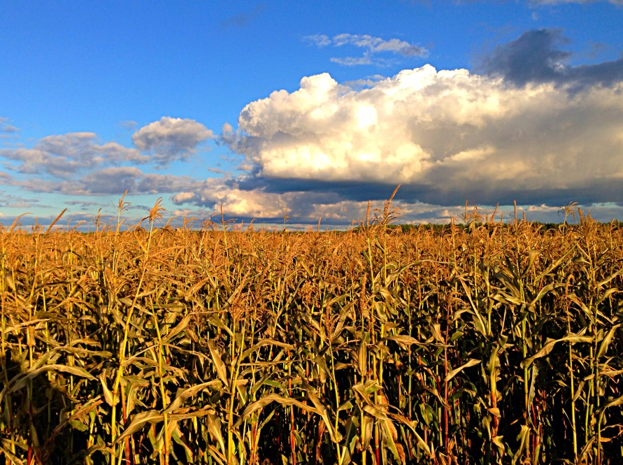
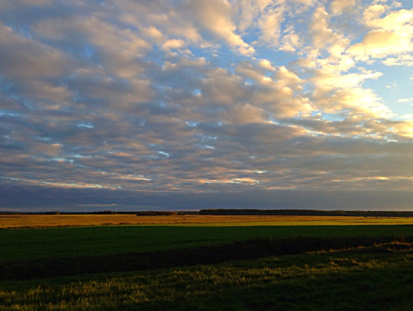
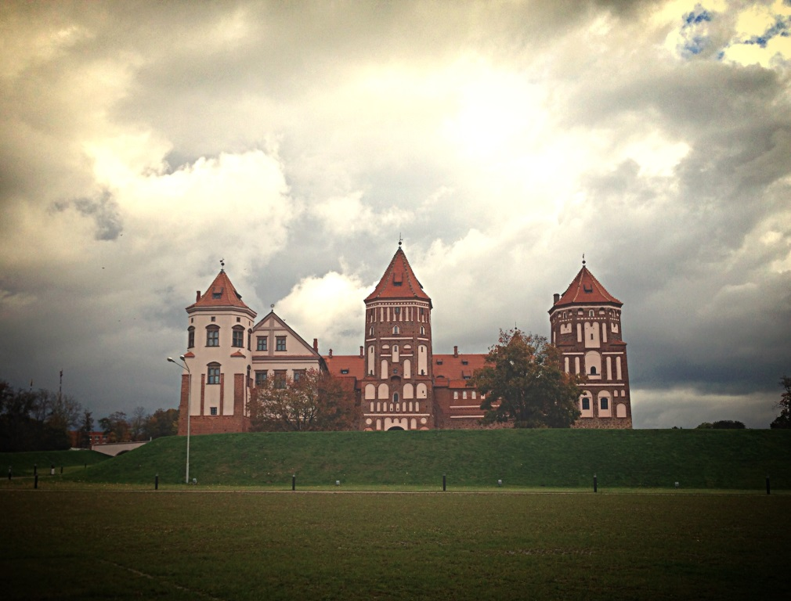
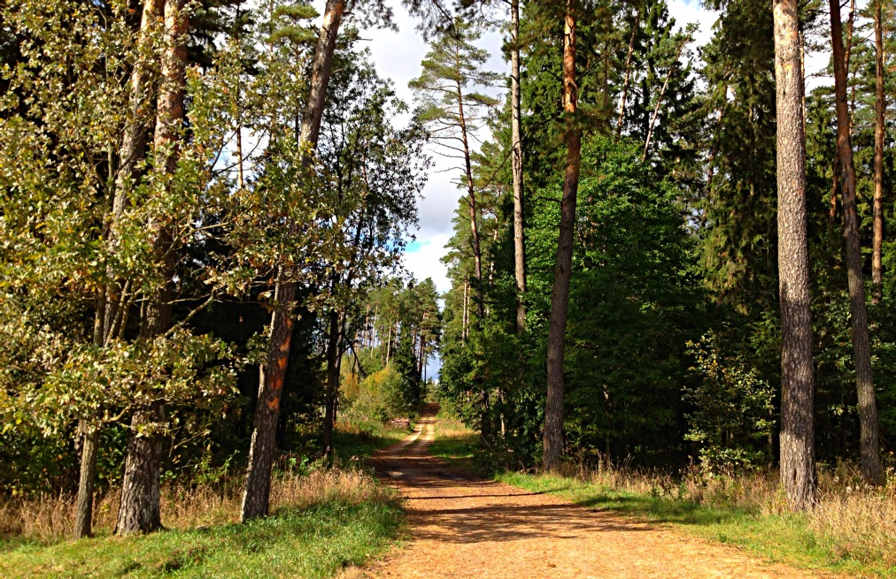
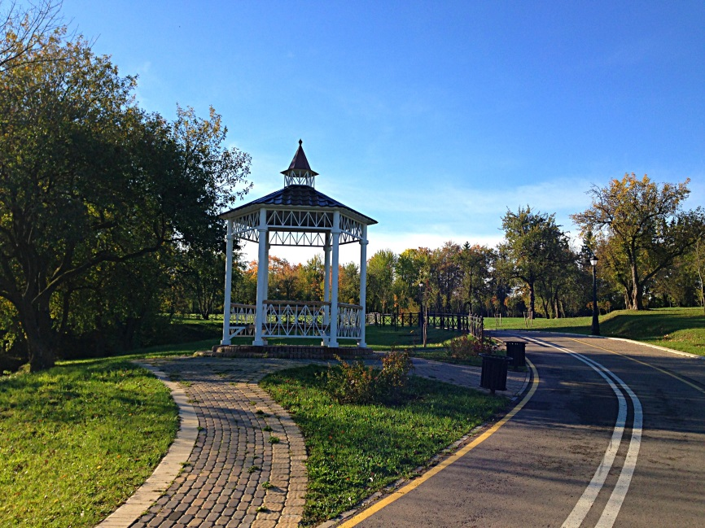
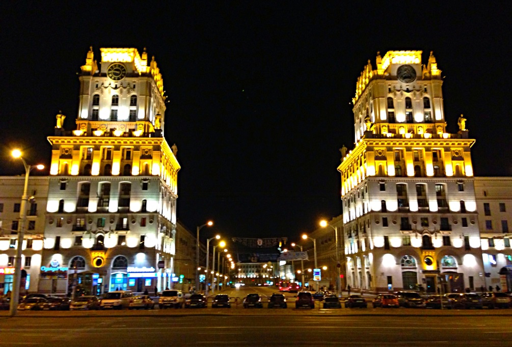
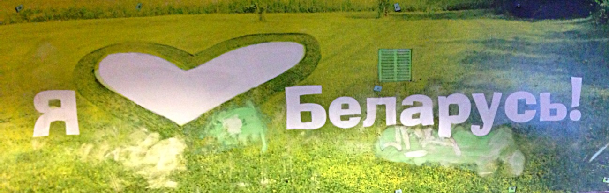

«Як ты сэрцу майму міла, дарагая Беларусь!»
Дорогие друзья! В самом разгаре весны 2014 года мы хотели бы пригласить вас в наше новое путешествие! Куда? В страну, овеянную легендами! Причем, не только преданиями старины глубокой. Но и вполне современными. Речь, про Белоруссию, на земли, бывшие когда-то весьма важной частью Великого Княжества Литовского и Речи Посполитой, Империи Российской и Советского Союза.
Наверное ни об одной другой стране, не ходит столько современных легенд, как о Беларуси. Люди жарко спорят: хорошо ли жить в Беларуси? Хорош ли Батька Лукашенко, плох ли? Мы, конечно, далеки от политики... хотя глянуть одним глазком, как же живут наши братья, «избравшие» другой путь развития, интересно. Своими глазами, а не через призму чьих-то политических пристрастий. Все таки, хорошо или плохо? Поэтому, наш маршрут идет не только через поля и леса — гордость Беларуси. Но и заходит в маленькие городки, где можно своими глазами посмотреть, как живут люди. Мы посетим не только старинные замки, но и самые обычные сельские магазины. Кстати, знаете о чем наши земляки никогда не спорят, когда речь заходит о Беларуси? Я вам отвечу: все сходятся во мнении, что белорусы — прекрасные люди. Добрые, неторопливые, гостеприимные.
Еще о чем споров нет, это о природе наших соседей. Она под стать национальному характеру. Если природа Франции — изящная, природа Андалузии - «жгучая», то природа Беларуси — спокойная. Леса, озера, небольшие холмы. Маршрут не сложный, установление рекордов не планируется. Большинство ночлегов будет организовано в сельской местности, в гостевых домах. Часто, на берегу озер или речки.
Происхождение названия Беларусь вызвало немало споров среди историков. По одной из версий название Белая Русь обусловлено доминирующим цветом одежды и волос местных жителей. Беларусь – страна, где любят землю и ценят ее дары. Страна полей, лесов, замков. Наш маршрут охватывает совсем небольшую ее часть, земли, принадлежавшие долгое время князьям Радзивиллам. В этом путешествии вы погрузитесь в далекое прошлое, в средние века, а также будете иметь возможность полюбоваться дышащими свежестью полями, пробуждающимися от зимы дубравами и березовыми рощами.

День 1 Барановичи – озеро Свитязь 60 км
Наш маршрут начинается в городе Барановичи, появившемуся на карте в 1871 году после начала движения поездов по линии Смоленск – Брест. В 1874 году здесь был построен железнодорожный узел, вокруг которого и продолжал разрастаться город. Поэтому в Барановичи удобно приехать прямыми поездами, хоть из Питера, хоть из Москвы, хоть из Киева. Вечером сели на поезд, утром прибыли на место.
Устройством города занималось Минское губернское правление. Позже согласно указу Александра III здесь была построена вторая железнодорожная станция Барановичи Полесские по ветке Вильнюс – Ровно. Дань прошлому здесь отдана в музее железнодорожной техники. Из Барановичей мы направимся на север.

Сегодня путь наш будет лежать через поля к Свитязанскому заказнику, славящемуся 25 различными ландшафтами на территории 847 гектаров. Об озере Свитязь сложена легенда, рассказанная Адамом Мицкевичем в поэме «Свитязь». Во времена первого великого князя литовского Миндовга (XIII в.) на месте озера стоял город Свитязь, в котором правил князь Туран. Во время войны с русскими князьями Миндовг вызвал свитяжскую дружину на помощь в обороне Новогрудка. Туран, подчиняясь своему долгу, оставил город на женщин, стариков и детей. Когда к Свитязи подошла вражеская рать, жители решили оказать сопротивление, но не имея возможности удержать город, они стали поджигать свои дома. В этот момент город провалился в озеро, которое образовалось на его месте. Все жители превратились в цветы, а враги, которые прикасались к ним, умирали. Так жители Свитязи избегли позора неволи.
День 2 Озеро Свитязь – Новогрудок – Омневичи 60 км
Сегодня мы направляемся в город, расположенный на живописных холмах в центре Новогрудской возвышенности.

Новогрудок, основанный в X-XI веках уже в первые века своего существования стал наиболее богатым городом Понеманья, центром Новогрудского княжества. В те годы новогрудчане устанавливали торговые контакты с Прибалтикой, Центральной Европой, Византией и Ближним Востоком. В середине XIII века Новогрудчина в результате военно-политических событий становится ядром образования нового европейского государства - Великого Княжества Литовского. Возвышение Новогрудка связано с деятельностью князя Миндовга, который в 1253 г. короновался здесь на короля Литвы и сделал город столицей государства. Тогда же и был основан первый замок на самом высоком из холмов на высоте 323 м над уровнем моря. От замка, перестроенного позже в XIV-XVI веках, сейчас остались только развалины и легенды, однако и по сей день чувствуется мощь былого оборонительного сооружения, которую все покорившие вершину велосипедисты смогут почувствовать, любуясь на окрестности.

Сегодня часть нашего маршрута лежит по заказнику Миранка и реке Неман, в песнях называемой «батька наш, Неман». Истоки Немана недалеко от Минска – две речки, Неманец и Лоша. Старожилы рассказывают, что раньше обе эти реки вытекали из одного родника близ деревни Верх-Неман. Это удивительное явление образно передают народные предания и легенды. В одной из легенд говорится, что когда-то, очень давно, Неманец и Лоша родились в одном месте и были братом и сестрой. Однажды капризная Лоша убежала. Долго искал ее брат, бежал напрямик через луга и леса, но все-таки нашел. И действительно, вырвавшись из болот, Неманец и Лоша направляются в разные стороны, а затем снова сливаются вместе, образуя Неман. Познакомиться поближе с мощью и красотой реки, заодно внести разнообразие в физическую активность, можно, приняв участие в сплаве на байдарках.
День 4 Мир – Несвиж 55 км

День 5 Несвиж – Николаевщина 50 км



